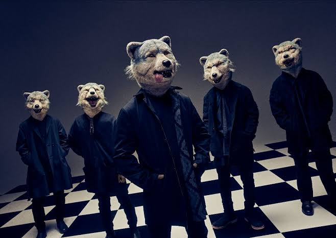
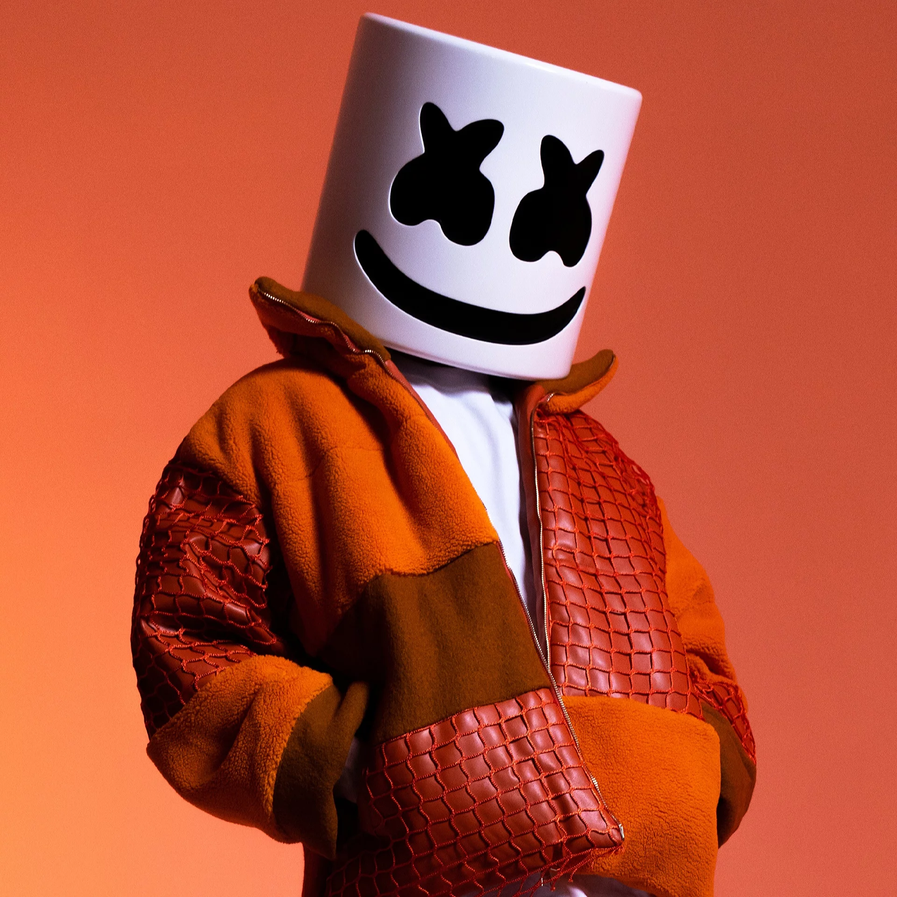

WATARU OKADA - My Favorite Music
Biography
- Name: Wataru Okada
- Date of Birth: 1st July, 1999 (age 25)
- Gender: Male
- Nationality: Japan
@Seattle
My Favorite Artists in This World
1. MAN WITH A MISSION
Profile
MAN WITH A MISSION is a Japanese rock band. Their distinguishing feature is that all of the members wear differently designed wolf masks.
Comments
I'm a fan of them since I was a junior high school student. Don't you think they are so mysterious? I have been to their lives so many times.
2. BTS

Profile
BTS, an acronym of Bangtan Sonyeondan or “Beyond the Scene,” is a Grammy-nominated South Korean group that has been capturing the hearts of millions of fans globally since its debut in June 2013.
Comments
Their songs and daces are so cool. I think they are the best pop group in this world. Due to a big love for them, I'm interested in Korean culture.
3. Marshmello
Profile
Marshmello is an American electronic music producer and DJ.
Comments
Last year, 2023, I have joined his concert in Japan for the first time. That night was so exiceted. If you love EDM songs, you will be addicted to his world.